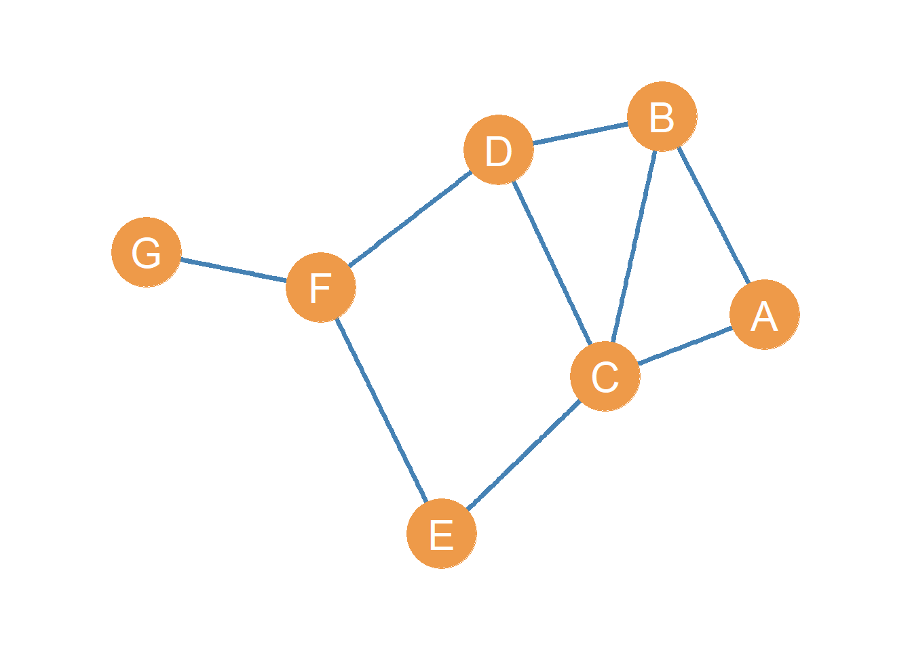
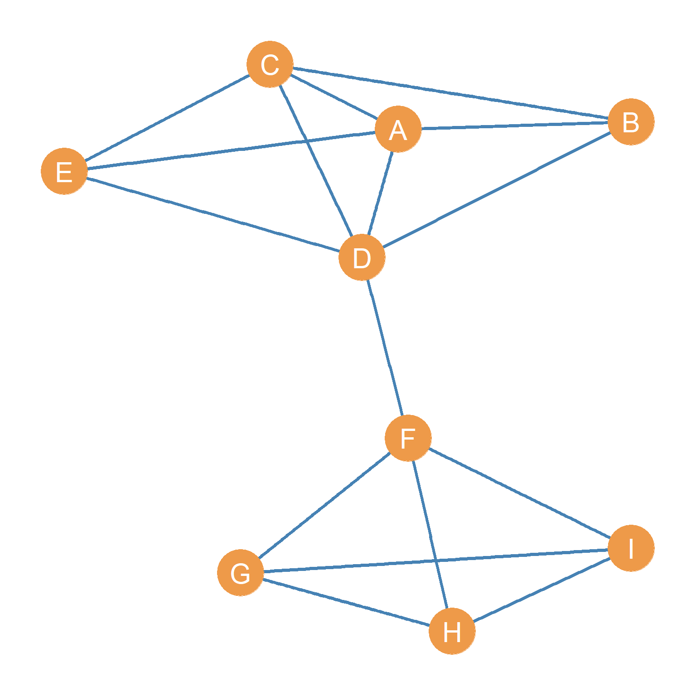
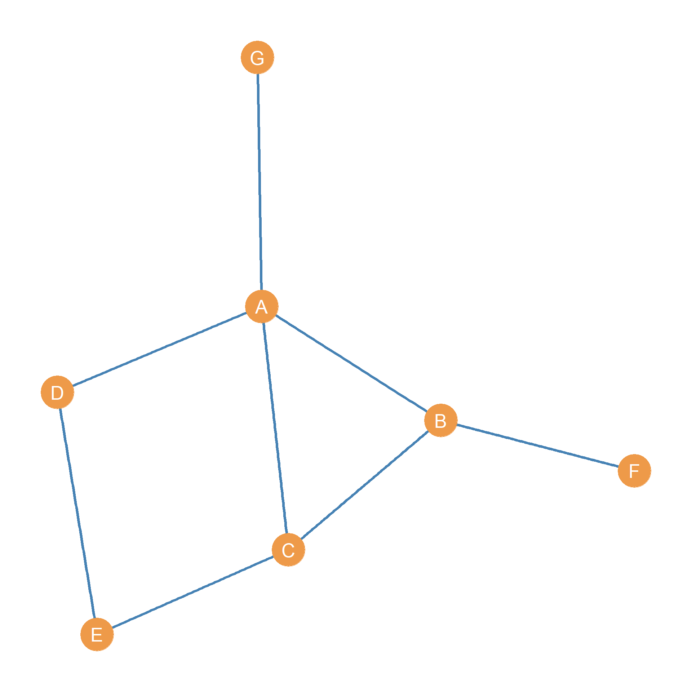
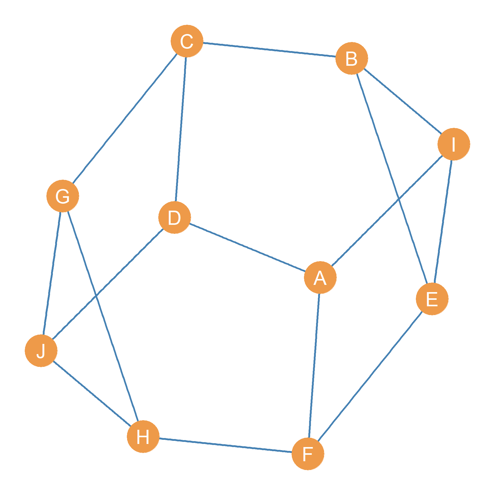

| A | B | C | D | E | F | G | H | I |
|---|---|---|---|---|---|---|---|---|
| 4 | 3 | 4 | 5 | 3 | 4 | 3 | 3 | 3 |
Basic Graph Metrics
Computing Metrics on Graphs
As graphs are really just representations of real-world networks, they can be as varied as different networks are from one another. Some social networks are small (composed of just a few people), while others are large. In some social networks, there is little connectivity, while other networks feature thousands, if not millions, of ties among people, like some social media platforms. Other networks, such as the network of all the neurons in the human brain, feature billions of nodes and trillions of edges. Some networks are very dense, while others are very sparse. Some networks are very centralized, while others are more decentralized. Some networks are very hierarchical, while others are more decentralized. Some networks are very clustered (featuring dense connections between people), while others are more sparse.
We can quantify a lot of these properties of real-world networks by representing them as graphs and then computing graph metrics. This is a fancy word for computing various quantities via the simple arithmetic operations of summing, multiplying, and dividing, most of which are functions of the number of nodes and edges in a graph. In this lesson, we will review the most important graph metrics in social networks.
As a running example, we will use the simple undirected graph shown in Figure 1.

Graph Order
The order of a graph (typically written as \(n\)) is the number of nodes in the graph. Technically speaking, keeping in mind that the graph is really a set of nodes and edges, the order is the cardinality of the node set \(n = |V|\). Cardinality is simply a technical term from set theory indicating how many elements there are in a set. Thus, our reference graph in Figure 1 has an order of 7.
Graph Size
Likewise, the size of a graph (typically written as \(m\)) is the number of edges in the graph, which is (like with nodes) the cardinality of the edge set \(m = |E|\). Thus, the size of the reference graph in Figure 1 is 9.
This means that if you say the size of the graph is 9, we will all understand that you are referring to the number of edges, as you would use the term order if you were talking about the number of nodes (which is 7 in this case).
The Graph Maximum Size
In some cases, we may be interested in knowing how many edges there could be in a graph if everyone were related to everyone else in the network. This is the maximum possible number of edges that could exist in a network of order \(n\).
Recall that, as we discussed previously, the number of edges in a graph is called the graph size. Additionally, a graph in which all possible edges are present is called a complete graph. The maximum size of a graph of order \(n\) is the number of edges that would exist in that graph if the graph were complete. A graph in which no edges exist (every node is an isolate) is called an empty graph.
While this may seem complicated, it is actually given by a simple (and important) formula for an undirected graph:
\[ Max(E)=\frac{n(n-1)}{2} \tag{1}\]
For our example graph in Figure 1, which has an order of \(n = 7\), the maximum size of the graph is:
\[ Max(E) = \frac{7(7-1)}{2} = \frac{7(6)}{2} = \frac{42}{2} = 21 \]
This means that if every node in the graph were connected to every other node, there would be 21 edges in the graph. Since our reference graph only has 9 edges, we can see that it is not very close to being complete.
Graph Maximum Size Explainer
Where does this formula for maximum graph size come from? A graph would be complete if every node were connected to every other node. It is easy to see that, for each node, this would be every other node in the graph except that node itself. So in a complete graph of order \(n\), the degree of each node has to be \(n-1\). So if we call the degree of the first node in the graph \((n-1)_1\), then the degree set (\(\mathbf{k}^c\)) of a complete graph would be:
\[ \mathbf{k}^{c} = [(n-1)_1, (n-1)_2, (n-1)_3 \dots (n-1)_n] \tag{2}\]
It is easy to see that adding up the degree of each node in the complete graph will give us a sum of degrees where each edge is counted twice (once for each endpoint). So we can write that sum of degrees as:
\[ \sum k_i^{c} = \sum_i^{n} n-1 \tag{3}\]
Essentially, we add up \(n-1\) to \(n-1\) to \(n-1\), etc. \(n\) times, once for each node in the graph. From basic arithmetic, we know that adding the same number \(n\) number of times is the same as multiplying that number by \(n\). Thus, the sum of degrees for a complete graph of order \(n\) is \(n \times (n-1) = n(n-1)\).
Because each undirected edge connects two nodes, it contributes to the degree of both. This means that each edge is counted twice in the degree sum. Therefore, we divide the sum of degrees by 2 to eliminate double-counting, resulting in \(\frac{n(n-1)}{2}\) as the formula for the maximum size of an undirected graph of order \(n\).
Applying your knowledge
You can now look like a genius. If somebody were to ask you:
Question: In a classroom with 10 kindergartners, how many total pairs of friends would exist if every kid were friends with every other kid?
Using your graph theory metrics knowledge, you can now pull out your phone calculator and compute:
\[ \frac{10(10-1)}{2} = \frac{10(9)}{2} = \frac{90}{2} = 45 \]
Impressing your audience immensely!
Graph Density
In a classic study, the British social anthropologist Elizabeth Bott made a classic distinction between two types of network structure. According to Bott, some networks are tight-knit and others are loose-knit (Bott 1957). Tight-knit networks feature many connections, and actors can reach others through multiple pathways. Loose-knit networks are more sparsely connected, and actors are only reachable to one another via a very restricted set of pathways.
It was soon realized that a very simple graph metric, called the network density, could serve as a useful index of Bott’s ideas about tight versus loose-knit networks. Tight-knit networks are dense, featuring many interconnections among actors, while loose-knit networks are less dense (Barnes 1969). How can we think of this in terms of graph theory concepts?
The density \(d(G)\) of a graph is a measure of how many ties between actors exist compared to how many ties between actors are possible, given the graph size (number of nodes) and the graph order (number of links). As such, the density of an undirected graph is quite simply calculated as the ratio between the observed number of edges \(m\) (the cardinality of the edge set), and the graph maximum size as defined using Equation 1.
\[ d(G)=\frac{m}{\frac{n(n-1)}{2}}=m \times \frac{2}{n(n-1)}=\frac{2m}{n(n-1)} \tag{4}\]
Where \(m\) is the number of edges (graph size) and \(n\) is the number of nodes (graph order) in the network.
For our reference graph shown in Figure 1, of size \(m = 9\) and order \(n = 7\), we can use Equation 4 to compute the graph density as follows:
\[ d(G) = \frac{2m}{n(n-1)} = \frac{2 \times 9}{7 \times (7-1)}= \frac{18}{7 \times 6} = \frac{18}{42} = 0.43 \]
The estimated density of the network, \(d = 0.43\) tells us that 43% of the total possible number of edges are actually observed. Another way to think about density is as the probability that, if we were to choose two random nodes in the network, the resulting dyad would be connected (as opposed to null).
Why is density important?
The density of a network property is important to consider for two reasons. First, (which is the definition of density!), it can help us understand how connected the network is compared to how connected it might be. Second, when comparing two networks with the same number of nodes and the same types of relationships, it can tell us how they differ.
For example, let us imagine two organizations, each with 10 people. One organization has high density, and the other has low density in terms of the interactions among the members. What might be some of the underlying social differences between the two organizations? While we would need more information, we could posit that the one issue might be that information does not transmit very efficiently within the low-density organization because it has to go from member to member, rather than diffusing rapidly from one member to all the others. Another issue might be the “hit by a bus” problem, where if one or two members are taken out of the network, you can suffer a breakdown because they are no longer there to coordinate the different parts that don’t talk to each other. Denser networks are less vulnerable to disruption when key nodes are removed.
References
Degree-Based Graph Metrics
Many graph metrics are based on the degrees of the node in the graph (as defined in ?@sec-degree). Here we cover the most important.
The Graph Degree Set
Computing the degree of each node in the network gives us a vector (called k), containing the degree of each node. The vector is of “length” n, where n is the number of nodes in the network. This is called the graph’s degree set, written k.
What is a vector? A vector is a sequence of numbers. Thus, \((1, 2, 3, 4)\) is a vector, and so is \((0, 1, 1, 0, 1, 1, 1)\) and \((0.23, 0.39, 0.89)\). The length of a vector is the number of elements in it. Thus, the length of the vector \((1, 2, 3, 4)\) is 4 and the the length of the vector \((0, 1, 1, 0, 1, 1, 1)\) is 7. When vectors are considered as sets of numbers, the length of the vector is equivalent to the cardinality of the set defined by the vector.
As you may have already figured out, there are as many members of this set as there are nodes in the graph, so the cardinality of the degree set is the same as that of the graph’s node set \(|\mathbf{k}| = |V|\).

Let’s consider the graph shown in Figure 2 again. The graph’s degree set k is shown in Table 1.
The Graph Degree Sequence
When we list the members of the degree sequence (each node’s degree) in decreasing order, from largest to smallest, this is called the graph’s degree sequence, denoted by d. Every graph has its own degree sequence, but graphs with very different structures (going by other graph metrics) can share the same degree sequence (Kim et al. 2009).
It is easy to see that if we order the values of the degree set from higher to lower, we would obtain the following degree sequence:
| 5 | 4 | 4 | 4 | 3 | 3 | 3 | 3 | 3 |
Minimum and Maximum Degree
When studying a network, we are usually interested in the range of connectivity of people. What is the maximum number of connections somebody has in the network? What is the smallest set of neighbors someone has? These two graph metrics are called the maximum and minimum degree, respectively. And are written \(k_{max}\) and \(k_{min}\). They are given by taking the maximum or the minimum values of the graph degree set describing the network. Thus, if \(\mathbf{k}\) is the vector containing each node’s degree, then the minimum and maximum degrees are given by:
\[ k_{max} = max(\mathbf{k}) \tag{5}\]
\[ k_{min} = min(\mathbf{k}) \tag{6}\]
Where \(max(\mathbf{k})\) says “give me the largest number in the vector k, and \(min(\mathbf{k})\) says”give me the smallest number in the vector k. Returning to our running example of the graph shown in Figure 2, it is easy to see from the degree set in Table 1 that, for this network, \(k_{max} = 5\) and \(k_{min} = 3\).
Degree Range
The arithmetic difference between \(max(\mathbf{k})\) and \(min(\mathbf{k})\) gives us a sense of the heterogeneity or gap between the connectivity of the best-connected and the least well-connected nodes in the graph. This is called the graph’s degree range, and it is written \(k_r\):
\[ k_r = k_{max} - k_{min} \tag{7}\]
In this case, \(k_r = 5 - 3 = 2\), which tells us that in this graph, the difference between the best and most poorly connected nodes is not really that large. Most nodes have a fair number of links to others. In real-world networks, such as the graph of a social media platform like Meta, the degree range can be pretty wide, since the maximum degree can be in the millions and the minimum degree can be zero.
The Sum of Degrees
Note that if we know the degree sequence of an undirected graph, we can determine how many edges the graph has. This is because the degree of each node can be defined in terms of the total number of edges incident on it (as we noted earlier). So if we know each node’s degree, we can also determine how many edges there are in the graph.
The first step we need to take is to compute the sum of degrees for each node in the graph. This quantity is written \(\sum_i k_i\). For the degree set of the graph shown in Figure 2, we can see that the sum of the degrees \(\sum_i k_i = 32\) (go ahead, use a calculator to add up all the numbers in Table 1).
If you go back to the graph shown in Figure 2 and count the lines, you can see there are 16. So summing up the degrees of each node ended up totaling twice the number of edges shown in the graph: \(16 \times 2 = 32\). The reason for this is that each edge is incident (touches) two nodes, so it makes sense that when you add up the degrees of each node, you end up with twice the number of lines shown in the visual representation of the graph.
So the relationship between the sum of the degrees and the number of edges in an undirected graph is one of simple doubling. In equation form, this is written:
\[ \sum_i k_i = 2m \tag{8}\]
Where m is the cardinality of the graph’s edge set \(|E|\). Some people call this the first theorem of graph theory (Benjamin et al. 2015, 20)!
Another way to think about why we end up with twice the number of edges is that in an undirected graph \(G\), if node A is a member of the set of neighbors of node B, then node B is necessarily also a member of the set of neighbors of node A. Thus, when computing the degree of each node, the edge AB does double duty, counting for the computation of both node A and node B’s degree scores. When we sum the degrees, the edge thus shows up twice. Note that in the directed case, we don’t have that problem, in which case \(\sum_i k_i = m\).
Graphical versus Non-Graphical Degree Sequences
Equation 8 has an interesting consequence that may not be immediately obvious. Putting our high-school algebra thinking cap on, we can solve for \(m\), and this will give us:
\[ m = \frac{\sum_i k_i}{2} \tag{9}\]
This tells us that the number of edges in a graph equals the sum of the degrees of its nodes divided by 2. However, this also tells us something else: For any undirected graph, the sum of the degrees of each node will always be an even number. That’s because we know that \(m\) is an integer (the number of edges in a graph can’t be a decimal), so that means that the numerator of the Equation 9, namely, the sum of degrees \(\sum_i k_i\) is divisible by two, and any number that is divisible by two (like 10, 24, 48, 120, etc.) is an even number. Ergo, the sum of degrees in a graph, \(\sum_i k_i\), is always an even number.
This last result, that the sum of degrees of a graph has to be even, has yet another not-so-obvious consequence. Consider the following two sums:
\[ 4 + 3 + 2 + 1 + 2 + 1 + 3 = 16 \tag{10}\]
\[ 4 + 3 + 3 + 1 + 2 + 1 + 3 = 17 \tag{11}\]
The numbers in Equation 10 add up to sixteen, which is an even number. So we know automatically that \(\{4, 3, 3, 2, 2, 1, 1\}\) could be the degree sequence of a possible graph with seven nodes (\(n = 7\)) and \(m = 16 \div 2 = 8\) edges. In fact, one such possible graph is shown in Figure 3.
However, we also know that since the sum shown in Equation 11 is an odd number, it cannot be the sum of degrees of any possible graph whatsoever. No undirected graph with seven nodes can have the degree sequence \(\{4, 3, 3, 3, 2, 1, 1\}\).
In graph theory terms, we say that the degree sequence \(\{4, 3, 3, 2, 2, 1, 1\}\) is graphical (could be the degree sequence of a possible graph), while the degree sequence \(\{4, 3, 3, 3, 2, 1, 1\}\) is not graphical.

What’s the difference between the graphical sequence \(\{4, 3, 3, 2, 2, 1, 1\}\) and the non-graphical sequence \(\{4, 3, 3, 3, 2, 1, 1\}\)? Time to find out.
In a graph, let us call a node with an even degree an even node. Let’s call a node with an odd degree (you guessed it) an odd node. You will notice that in the graphical degree sequence, there are four odd nodes \(\{3, 3, 1, 1\}\) and three even nodes \(\{4, 2, 2\}\). The not graphical degree sequence has five odd nodes \(\{3, 3, 3, 1, 1\}\) and two even nodes \(\{4, 2\}\).
So the number of odd nodes in the graphical sequence is even (four), and the number of odd nodes in the non-graphical sequence is odd (five). Is this a coincidence? Turns out not!
In every graphical degree sequence, the number of odd nodes has to be an even number. That is to say, if a sequence of numbers has an odd number of odd numbers, then it cannot be the degree sequence of any possible graph! We could have checked because any sequence of numbers with an odd number of odd numbers sums to an odd number, and we already know that a sequence that sums to an odd number is not graphical.
The number of even nodes, on the other hand, as we saw before, can be odd, and the sequence is still graphical. That’s because any set of even numbers, odd or even, will sum to an even number. So what matters is the number of odd nodes, which has to be even for a degree sequence to describe a possible graph (Buckley and Harary 1990, 3). Heady!
Knowing the relationship between the sum of degrees and the number of edges, we can begin calculating other important graph metrics.
The Average Degree
Average Degree in Undirected Graphs
Once we know the sum of the degrees, we can compute an important graph metric called the average degree. This gives us a sense of whether there are many well-connected nodes in the graph (in which case the average degree is high), or whether the typical node has only a small number of neighbors (in which case the average degree is low).
To get the average degree for a graph, written \(\bar{k}\), all we need to do is compute the sum of degrees (like earlier) and divide it by the total number of nodes in the graph:
\[ \bar{k} = \frac{\sum_i k_i}{n} \tag{12}\]
In an undirected graph G like the one shown in Figure 2, the graph average degree is given by twice the total number of symmetric ties (the cardinality of the edge set as defined earlier) divided by the total number of nodes (the cardinality of the node set). Because of the identity identified in Equation 8, where \(\sum_i k_i = 2m\), we can also write the formula for the average degree as follows by switching the numerator:
\[ \bar{k} = \frac{2m}{n} \]
For Figure 2, the average degree of the graph is:
\[ \bar{k} = \frac{2m}{n} = \frac{2 \times 16}{9} = \frac{32}{9} = 3.6 \tag{13}\]
Although straightforward, the graph’s average degree is a powerful tool for analyzing the social world. For example, if we have two school clubs of the same size and ask students who their friends are in the club, we might get very different average degrees. Let us assume that the average degree in the first network is two, while in the second network it is five.
This statistic indicates that people in the second network have more friends within the group than those in the first network. If we are interested in why the first group failed and the second group kept meeting, we might understand that the underlying social relations of friendship, which might be theorized as contributing to the club’s survival, were weaker in the first group to begin with than in the second. We are thus able to gain insight into the causes and/or underlying conditions that shape the social world.
The Connection Between Density and Average Degree
There is an intimate mathematical relationship between the graph density and the graph average degree. Let’s see what it is.
Take another look at Equation 4. It says that density is equal to:
\[ d(G)^u = \frac{2m}{n(n-1)} \tag{14}\]
We can write the same equation as the product of two different fractions. Like this:
\[ d(G)^u = \frac{2m}{n} \times \frac{1}{n-1} \tag{15}\]
Now, take a look at the first (left-hand) fraction of this product. Does it look familiar? It should, because it is the formula for the average degree we wrote down in Equation 12!
So that means if we know the average degree and the number of nodes in a graph, we also know the graph’s density without knowing the number of edges. Mathematical magic.
How do we do that? Well, substituting the fraction \(\frac{2m}{n}\) for its equivalent, the average degree \(\bar{k}\), in Equation 15 we get:
\[ d(G)^u = \bar{k} \times \frac{1}{n-1} = \frac{\bar{k}}{n-1} \tag{16}\]
So this formula tells us that the density of a graph is equivalent to its average degree divided by the number of nodes minus one. Pretty simple!
Advanced Degree Metrics Topics
Degree Variance
Once we know the average degree of a graph, it is possible to compute more complex measures of the heterogeneity in connectivity across nodes (e.g., the extent to which there is a very big spread between well-connected and not so well-connected nodes in the graph) beyond the simpler measures of range such as the difference between \(k_{max}\) and \(k_{min}\).
One such measure was proposed by the sociologist and statistician Tom Snijders in a 1981 paper (Snijders 1981). It is called the degree variance of the graph. It is written \(\mathcal{v}(G)\) and it is defined as the average squared deviation between the degree of each node and the average degree:
\[ \mathcal{v}(G) = \frac{\sum_i (k_i - \bar{k})^2}{n} \tag{17}\]
The equation says that to compute the degree variance, first we create a vector of the square of the difference between each node’s degree and the average degree of the graph \((k_i - \bar{k})^2\), then we sum all the values in this vector (note that since we are squaring all these values will be a positive number), and divide the result by the total number of nodes \(n\).
To compute the degree variance of the graph shown in Figure 2 using Equation 17, we can follow these steps:
- First, we compute the vector of differences between each node’s degree \(k_i\) (shown in Table 1) and the average degree \(\bar{k}\) (already computed in Equation 13). This yields the following vector:
| A | B | C | D | E | F | G | H | I |
|---|---|---|---|---|---|---|---|---|
| 0.44 | -0.56 | 0.44 | 1.44 | -0.56 | 0.44 | -0.56 | -0.56 | -0.56 |
- Then we square each of these numbers \((k_i - \bar{k})^2\), which results in the following vector of squared deviations:
| A | B | C | D | E | F | G | H | I |
|---|---|---|---|---|---|---|---|---|
| 0.2 | 0.31 | 0.2 | 2.09 | 0.31 | 0.2 | 0.31 | 0.31 | 0.31 |
- Then we compute the sum of all these numbers \(\sum_i (k_i - \bar{k})^2\), which is 4.2.
- Finally, we divide this sum by the number of nodes in the graph, which gives us:
\[ \mathcal{v}(G) = \frac{4.2}{9} = 0.47 \]

The degree variance is intended to capture the extent of inequality in the connectivity of nodes in a graph. Inequality exists when a few nodes have many connections, while most nodes have only a few. The more inequality, the higher the variance. This means that in graphs where there is very little variation in the connectivity of each node (all nodes have roughly the same number of connections), the degree variance should be at a minimum.
Regular Graphs
The most extreme version of the low inequality case is shown in Figure 4. This graph has 10 nodes, and every node has the same degree \(k = 3\), so the average degree is also 3, \(\bar{k} = 3\). This is called a regular graph.
Because in a regular graph, every node has the same degree, we refer to regular graphs by their node degree (\(k\)) and their order (\(n\)) as k-regular graphs of order n. So, the example shown in Figure 4, where every node has degree equal to three (\(k = 3\)) and there are ten nodes (\(n = 10\)) is a three-regular graph of order ten. Because \(k - \bar{k} = 3 - 3 = 0\) for all nodes in the regular graph, The degree variance of a regular graph is always zero (because the numerator of Equation 17 will always be zero).
Node Average Nearest Neighbor Degree
Just as we can compute the degree of each node, we may be interested in whether nodes in the network tend to connect to others of high degree, or whether connections occur at random, irrespective of degree. The first situation, in which people tend to connect to people of high degree, is called preferential attachment in network science (Barabási and Albert 1999). It is also referred to as a popularity tournament structure in sociology (Waller 1937). If you went to a real, live high school, you may know how this works.
To get a sense of whether a given node prefers to connect to others who also have a large number of connections, we can compute an index called the average nearest neighbor degree, which is conventionally written \(\bar{k}_{nn(i)}\).
This is given by the following formula:
\[ \bar{k}_{nn(i)} = \frac{1}{k_i} \sum_{j \in \mathcal{N(i)}} k_j \tag{18}\]
The formula says that to compute the \(k_{nn}\) of node i we take sum of the degrees of each of their neighbors j (remember that \(j \in \mathcal{N(i)}\) means “as long as node j belongs to the set \(N(i)\)”), and then divide it by the degree of node i.
| A | B | C | D | E | F | G | H | I |
|---|---|---|---|---|---|---|---|---|
| 3.8 | 4.3 | 3.8 | 3.6 | 4.3 | 3.5 | 3.3 | 3.3 | 3.3 |
As an example, the \(\bar{k}_{nn(i)}\) for each node in the undirected graph shown in Figure 2 are shown in Table 5. This is the vector of average nearest neighbor degrees for the graph \(k_{nn}\). The table indicates that nodes B and E tend most strongly to connect to others who are also popular, while G, H, and I show the weakest such tendencies.
But how can we know if a \(\bar{k}_{nn(i)} = 4.3\) is a big number or a small number? Well, we can compare each node’s \(\bar{k}_{nn(i)}\) to the average degree (\(\bar{k}\)) as defined previously. If a node’s \(\bar{k}_{nn(i)}\) is bigger than the average degree of the graph, then we can say that its neighbors are more likely to be popular than expected by chance. For instance, we know, from the calculation shown in Equation 13, that the average degree for this graph is 3.6, so a \(\bar{k}_{nn(i)} = 4.3\) tells us that a node connects to others that are (on average) more popular than the average person.
The Graph’s Average Nearest Neighbor Degree
If we take the average of the average nearest neighbor degree vector for each node shown in Table 5, this would give us the graph’s average nearest neighbor degree (\(\bar{k}_{nn}\)). But what could this possibly mean? Well, this would tell us the typical number of friends that the typical friend of the typical node in the graph has! Essentially, the expected number of friends of friends of the average person.
In a mind-bending paper, the sociologist Scott Feld (1991) showed, that with very few exceptions (e.g., regular graphs), the average number of friends of the typical person (the graph’s average degree) is smaller than the average number of friends of friends of the typical person in the same social network (the graph’s average nearest neighbor degree). That is, your friends have more friends than you do. Don’t get depressed. This is just how social networks work.
Check it out for yourself! If we compute the graph’s average nearest neighbor degree from the numbers in the vector shown in Table 5, this would give us \(\bar{k}_{nn} = 3.7\), which is larger than the same graph’s average degree we computed earlier (\(\bar{k} = 3.6\)). Weird!
References
Barabási, Albert-László, and Réka Albert. 1999. “Emergence of Scaling in Random Networks.” Science 286 (5439): 509–12.
Barnes, John A. 1969. “Graph Theory and Social Networks: A Technical Comment on Connectedness and Connectivity.” Sociology 3 (2): 215–32.
Benjamin, Arthur, Gary Chartrand, and Ping Zhang. 2015. The Fascinating World of Graph Theory. Princeton University Press.
Bott, Elizabeth. 1957. Family and Social Network: Roles, Norms, and External Relationships in Ordinary Urban Families. Tavistock Publications.
Buckley, Fred, and Frank Harary. 1990. Distance in Graphs. Addison-Wesley.
Feld, Scott L. 1991. “Why Your Friends Have More Friends Than You Do.” American Journal of Sociology 96 (6): 1464–77.
Kim, Hyunju, Zoltán Toroczkai, Péter L Erdős, István Miklós, and László A Székely. 2009. “Degree-Based Graph Construction.” Journal of Physics A: Mathematical and Theoretical 42 (39): 392001.
Snijders, Tom AB. 1981. “The Degree Variance: An Index of Graph Heterogeneity.” Social Networks 3 (3): 163–74.
Waller, Willard. 1937. “The Rating and Dating Complex.” American Sociological Review 2 (5): 727–34.